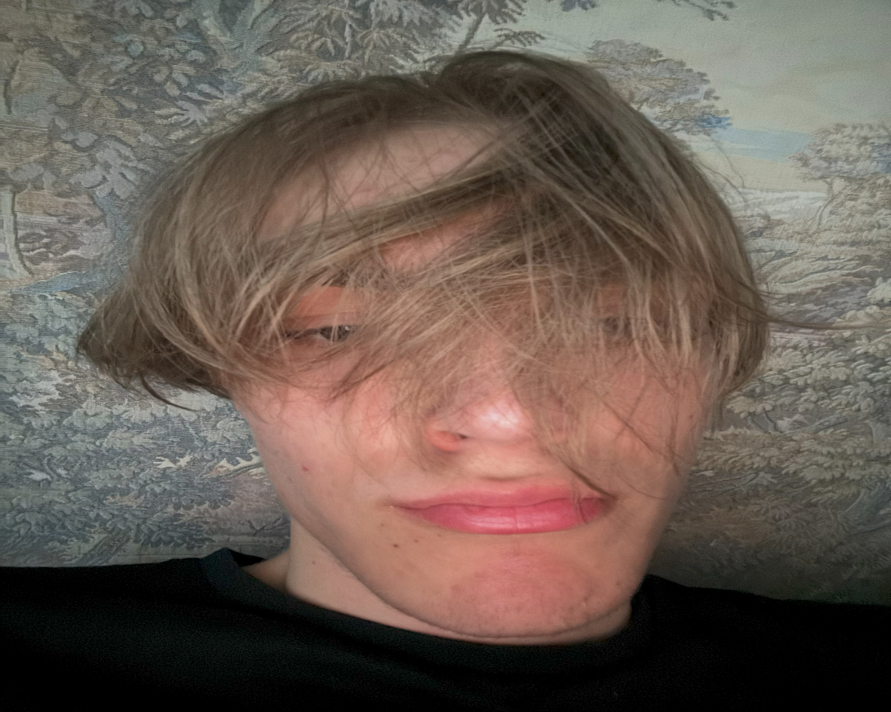
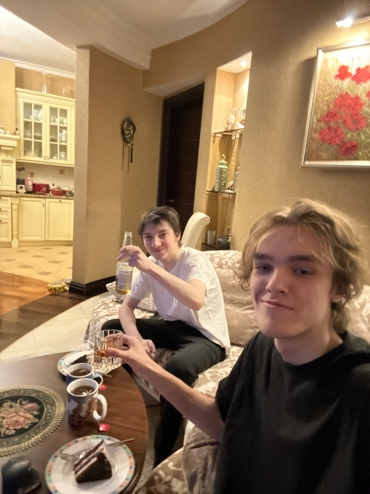
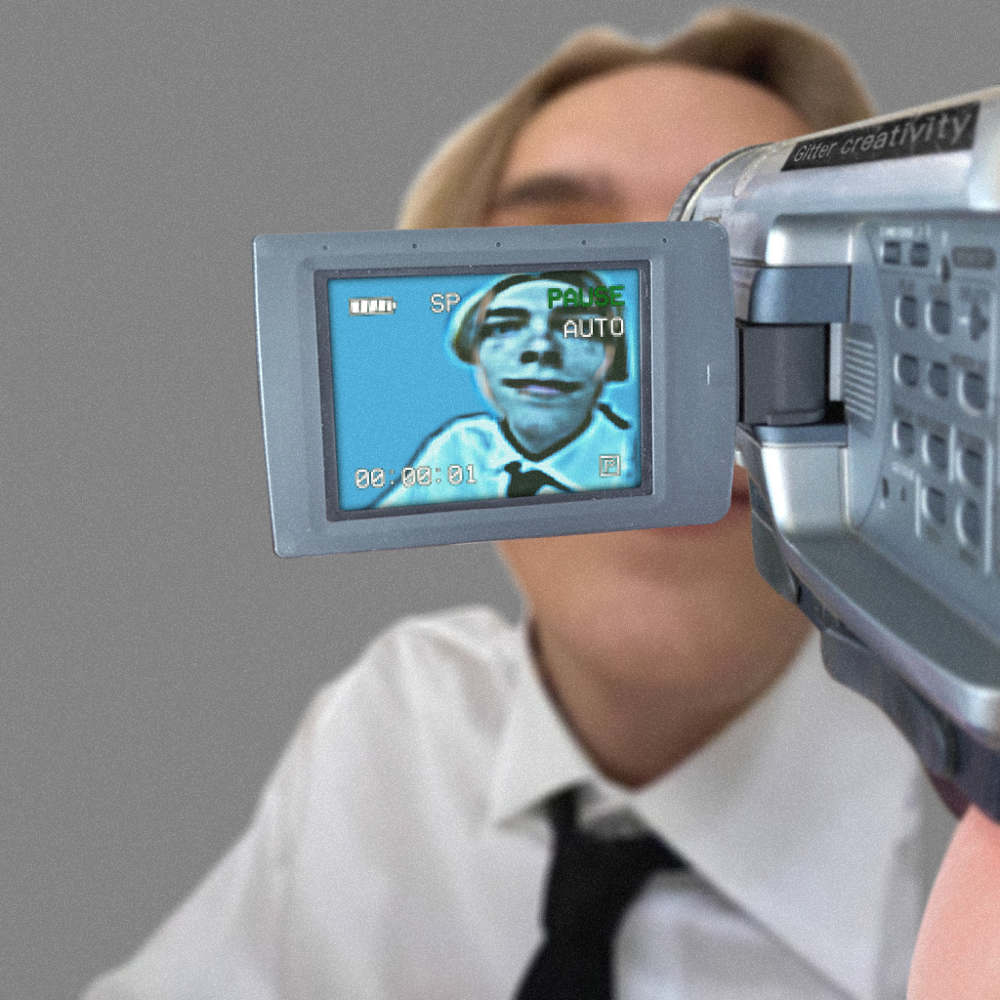
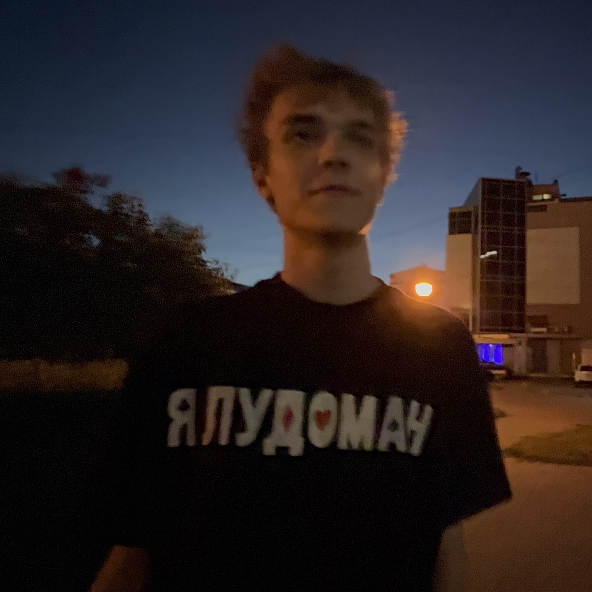
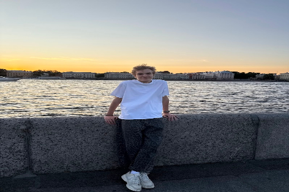
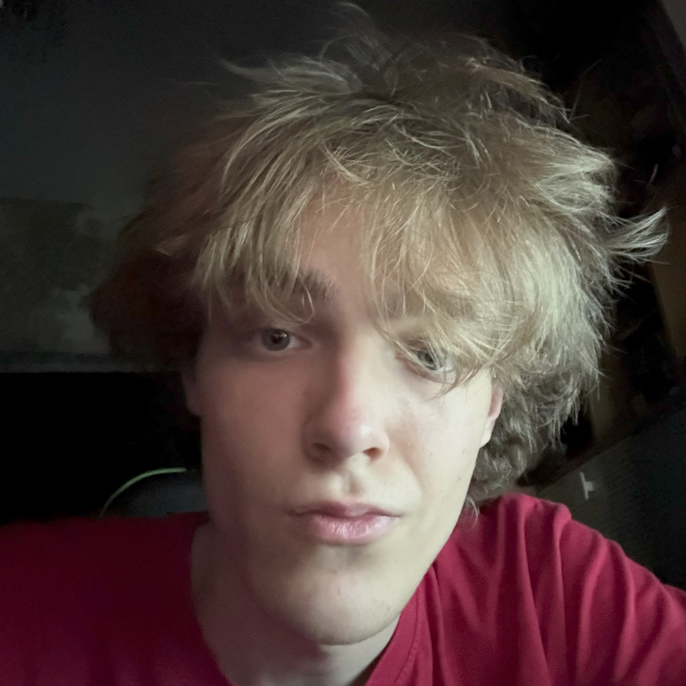

Уже не ребенок, еще не корпорация.
сводка
Что известно точно
Оттуда остались выносливость, темп и привычка держать удар.
Разбирается в программировании без лишнего шума и пафоса.
Серьезность плавающая, харизма стабильная.
фотоархив
Шесть доказательств, что это не нейросеть






характеристика
Нормальная версия правды
//
Без лишних легенд: Тимофей не пытается выглядеть слишком правильным. В этом и плюс. Он скорее из тех, кто спокойно набирает форму, чем громко обещает.
Коротко, по делу
- Спортивное прошлое дает дисциплину, а не только красивые истории про "характер".
- Программирование заходит именно потому, что там можно доказывать все не словами, а результатом.
- По фото видно: человек умеет быть одновременно нормальным, смешным и неожиданно кинематографичным.
- Если делать запоминающийся сайт про Тимофея, то только такой, который чуть абсурден и поэтому честный.
контакты
Куда ведут цифровые следы
youtube
@14devstvenic
Главный выход в медиапространство. Видео, вайб и доказательства, что камера его не боится.
открыть канал telegram@KaPl1k
Самый короткий маршрут, если нужно написать Тимофею без официальных церемоний.
перейти githubfamemov
Следы в коде. Туда лучше идти тем, кто любит смотреть не слова, а реальные файлы.
смотреть код